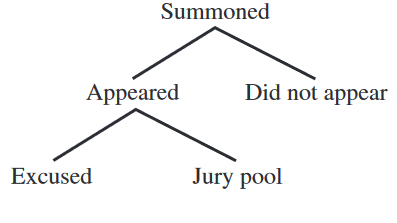

Twelve jurors are needed for an upcoming trial. The diagram below illustrates a part of the process of jury selection. The 12 jurors will be selected from a jury pool of about 60 people. The court records show a trend that only 40% of the people who are summoned for jury duty actually appear and that of the people who appear, \(\dfrac{1}{3}\)are excused. If this same trend continues, how many people should be summoned to have as close as possible to 60 people in the jury pool?
